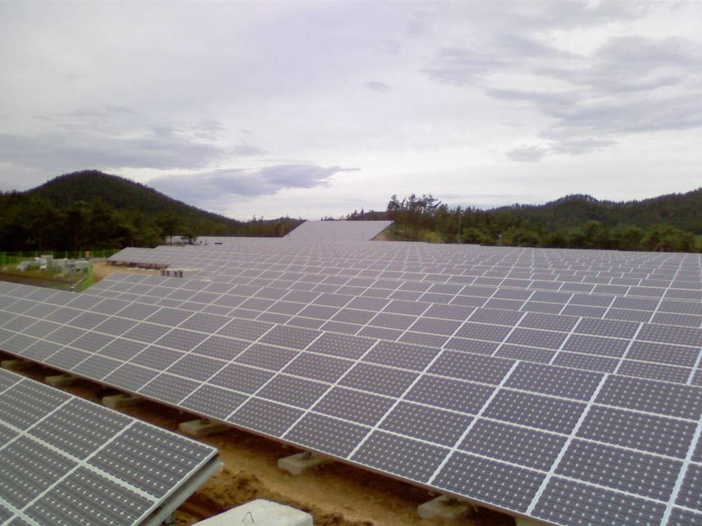

모햇 햇살그린협동조합, 상업운전 태양광 1,427곳·176.1MW…한 달 새 46곳 늘어

조합원 투자금 3,497억5,000만 원 중 출자금은 15억2,700만 원…10월 발전매출은 SMP 하락에 6.8% 줄어
재생에너지 투자 플랫폼 모햇을 통해 조합원을 모은 햇살그린협동조합이 10월 말 기준 상업운전 중인 태양광발전소가 1,427곳, 설비용량 176.1MW라고 13일 공시했다. 한 달 사이 46곳, 6.0MW가 늘었고 발전소 한 곳의 평균 용량은 약 123.4kW다. 조합원이 넣은 돈은 3,497억5,000만 원으로, 이 가운데 출자금은 15억2,700만 원이고 나머지 3,482억2,300만 원은 조합원 차입금이다.
건설 중인 259곳(33.8MW), 개발행위허가 접수 단계 144곳(26.9MW) 등을 합한 전체 구축 대상은 1,954곳(255.1MW)이다. 10월 발전량은 20.1GWh로 전달보다 5.3% 늘었지만, 육지 월평균 SMP가 kWh당 119.02원에서 110.05원으로 7.5% 떨어지면서 발전매출은 42억1,500만 원으로 6.8% 줄었다. 조합은 조합원에게 매달 이자를 지급하고 있으며, 월별 결산 공시와 발전소 현장 투어를 이어 가고 있다.
시민에너지 관점
3,500억 원 가까운 개인 돈이 1,400곳 넘는 발전소로 흘러간 것은 시민 자금이 재생에너지를 넓힐 힘이 있다는 증거다. 다만 투자금의 99% 이상이 출자가 아닌 차입금이어서, 조합원은 이자를 받는 채권자에 가깝고 발전소 운영과 지역 결정에 참여하는 주인의 몫은 작다. 독일 에너지협동조합이 조합원 1인 1표의 출자로 지역 사업을 정해 온 것처럼, 수익과 함께 의결권과 지역 환원이 따라가야 시민에너지라 부를 수 있다. 투자 플랫폼과 정부 모두 출자 비중과 발전소 주변 주민 참여 비율을 공시 항목에 넣어 투명성을 높여야 한다.
출처: 핀테크경제신문 2026-11-13 김현태 원문 보기
モヘッのヘッサルグリーン協同組合、商業運転の太陽光1,427カ所・176.1MW…1カ月で46カ所増
組合員の投資金3,497億5,000万ウォンのうち出資金は15億2,700万ウォン…10月の発電売上はSMP下落で6.8％減
再生可能エネルギー投資プラットフォーム「モヘッ」を通じて組合員を集めたヘッサルグリーン協同組合は13日、10月末時点で商業運転中の太陽光発電所が1,427カ所、設備容量176.1MWになったと公示した。1カ月で46カ所、6.0MW増え、発電所1カ所あたりの平均容量は約123.4kWだ。組合員が投じた資金は3,497億5,000万ウォンで、このうち出資金は15億2,700万ウォン、残る3,482億2,300万ウォンは組合員からの借入金だ。
建設中の259カ所（33.8MW）、開発行為許可の申請段階の144カ所（26.9MW）などを合わせた全体の構築対象は1,954カ所（255.1MW）だ。10月の発電量は20.1GWhで前月より5.3％増えたが、陸地の月平均SMPが1kWhあたり119.02ウォンから110.05ウォンへ7.5％下がったため、発電売上は42億1,500万ウォンと6.8％減った。組合は組合員に毎月利息を支払っており、月次決算の公示と発電所の現地ツアーを続けている。
市民エネルギーの視点
3,500億ウォン近い個人の資金が1,400カ所を超える発電所に流れたことは、市民の資金に再生可能エネルギーを広げる力があることを示している。ただし投資金の99％以上が出資ではなく借入金であるため、組合員は利息を受け取る債権者に近く、発電所の運営や地域の決定に参加する持ち主としての取り分は小さい。ドイツのエネルギー協同組合が組合員1人1票の出資で地域の事業を決めてきたように、収益とともに議決権と地域還元が伴ってこそ市民エネルギーと呼べる。投資プラットフォームと政府はともに、出資の比率と発電所周辺住民の参加比率を公示項目に加え、透明性を高めるべきだ。
出典: 핀테크경제신문 2026-11-13 김현태 原文を読む
“Mohaet”阳光绿色合作社商业运行光伏电站达1,427座、176.1MW…一个月增加46座
社员投资3,497.5亿韩元中出资仅15.27亿韩元…10月发电收入因SMP下跌减少6.8%
通过可再生能源投资平台“Mohaet”招募社员的阳光绿色（Haetsal Green）合作社13日公示，截至10月底，其商业运行的太阳能电站达1,427座，装机容量176.1MW。一个月内增加46座、6.0MW，每座电站平均容量约123.4kW。社员投入的资金为3,497.5亿韩元，其中出资额为15.27亿韩元，其余3,482.23亿韩元为社员借款。
加上在建的259座（33.8MW）、处于开发行为许可申请阶段的144座（26.9MW）等，全部建设对象为1,954座（255.1MW）。10月发电量为20.1GWh，比上月增加5.3%，但陆地月平均系统边际价格（SMP）从每千瓦时119.02韩元降至110.05韩元，下跌7.5%，发电收入减少6.8%至42.15亿韩元。合作社每月向社员支付利息，并持续进行月度结算公示和电站现场参观。
市民能源视角
近3,500亿韩元的个人资金流入1,400多座电站，证明市民资金有扩大可再生能源的力量。但投资中99%以上是借款而不是出资，社员更像领取利息的债权人，参与电站运营和地方决策的“主人”份额很小。正如德国能源合作社以社员一人一票的出资决定地方项目，只有收益与表决权和地方回馈同行，才称得上市民能源。投资平台和政府都应把出资比例和电站周边居民参与比例列入公示项目，提高透明度。
来源: 핀테크경제신문 2026-11-13 김현태 查看原文
Mohaet's Haetsal Green cooperative reaches 1,427 operating solar plants and 176.1MW, up 46 in a month
Of 349.75 billion won raised from members, only 1.527 billion won is equity; October power sales fall 6.8% as SMP drops
Haetsal Green Cooperative, which recruits members through the renewable energy investment platform Mohaet, disclosed on the 13th that it had 1,427 solar plants in commercial operation with a combined capacity of 176.1MW at the end of October. That is 46 plants and 6.0MW more than a month earlier, with an average plant size of about 123.4kW. Members have put in 349.75 billion won, of which 1.527 billion won is equity and the remaining 348.223 billion won is loans from members.
Including 259 plants under construction (33.8MW) and 144 at the development permit application stage (26.9MW), the total pipeline stands at 1,954 plants (255.1MW). October generation rose 5.3% from the previous month to 20.1GWh, but power sales fell 6.8% to 4.215 billion won as the mainland monthly average system marginal price (SMP) dropped 7.5% from 119.02 won to 110.05 won per kWh. The cooperative pays members interest every month and continues monthly financial disclosures and site tours of its plants.
Citizen Energy View
Nearly 350 billion won of private money flowing into more than 1,400 plants shows that citizens' funds can expand renewable energy. But with over 99% of the money being loans rather than equity, members are closer to creditors earning interest, and their share as owners taking part in plant operation and local decisions is small. Just as German energy cooperatives have decided local projects through member equity on a one-member-one-vote basis, voting rights and local returns must go along with income for this to be called citizen energy. Investment platforms and the government should both add the equity share and the participation rate of residents near the plants to disclosure items to improve transparency.
Source: 핀테크경제신문 2026-11-13 김현태 Read the original